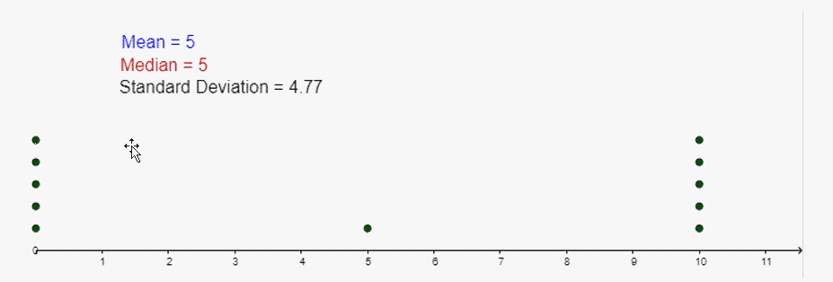
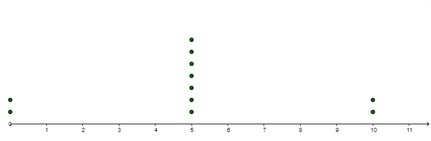
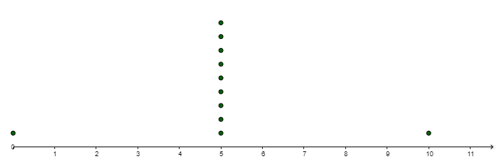
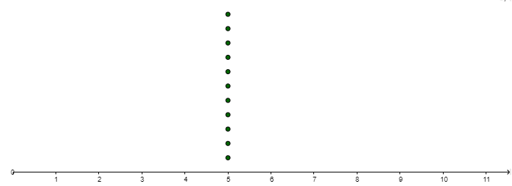
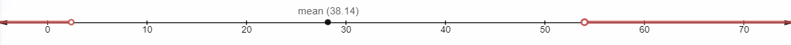
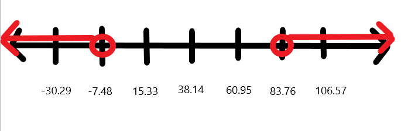
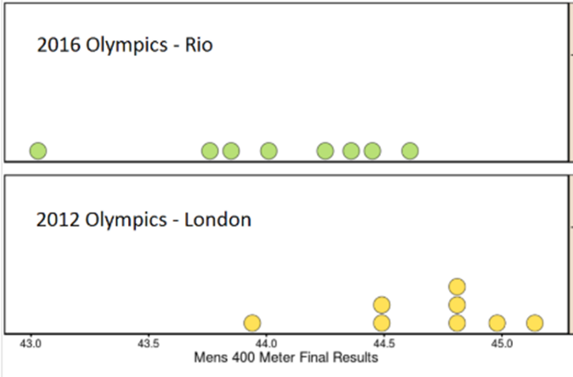
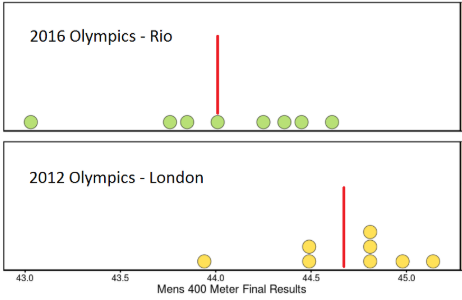

Unit 1 Describing Data
1.7 Measures of Variation
Range, Variance, Standard Deviation
2 Sigmas \( \begin{equation} \sum={\operatorname{sum}} \end{equation}\); \(\begin{equation} \sigma= \end{equation}\) standard deviation
Range:
Difference between the minimum and maximum values in the data x max - x minVERY sensitive to extreme values. Can increase dramatically with the inclusion of one or more outliers.
Standard Deviation:
A measure of variation of all values from the mean.- The units are the same as the units of the data.
- If all your data are the same value, your standard deviation will be zero.
- It the sample is small and the range is large, \(s\) can increase dramatically with the inclusion of one or more outliers.
sample standard deviation is a statistic
\( \begin{equation} s=\sqrt{\frac{\sum(x-\overline{x})^{2}}{(n-1)}} \end{equation}\)\(\begin{equation} s=\sqrt{\frac{\left(n \sum x^{2}-\left(\sum x\right)^{2}\right)}{n(n-1)}} \end{equation}\)
population standard deviation is a parameter
\(\begin{equation} \sigma=\sqrt{\frac{\sum(x-\mu)^{2}}{N}} \end{equation}\)
Variance:
A measure of the variation equal to the square of the standard deviation.The sample variance, \(s\) 2, is an unbiased estimator of the population variance, \(\begin{equation} \sigma \end{equation}\)2.
Range Rule Of Thumb:
minimum usual value = \(\begin{equation} \mu-2 \sigma \end{equation}\)
maximum usual value =\(\begin{equation} \mu+2 \sigma \end{equation}\)
Note: if a sample is NOT REPRESENTATIVE of the population, you can’t tell much about the population center or variation based on the sample.
Calculating Standard Deviation
- Calculate the standard deviation and variance of the following data set using the formulas. Check your answer with technology.
Data Set: 3 5 6 7 9
\(\begin{equation} \overline{x}_{A}=6 \quad n_{A}=5 \quad s_{A}=2.24 \end{equation}\)
\(s_{A}=\sqrt{\frac{\sum(x-\overline{x})^{2}}{n-1}}=\sqrt{\frac{(3-6)^{2}+(5-6)^{2}+(6-6)^{2}+(7-6)^{2}+(9-6)^{2}}{5-1}}=\sqrt{\frac{9+1+0+1+9}{4}}=\sqrt{\frac{20}{4}}=\sqrt{5} \approx 2.24\)
- Compare and contrast the following data sets. Record your observations.    
- The graphs below show the results for the medal race of the mens' 400 meters at the 2012 and 2016 games. What do you notice about these times? How are the times from the 2 years similar? How are they different? Which year do you think had a more "exciting" race? Explain.
- Fuel Economy: A sample of midsized cars have the given fuel efficiencies (Combined City/Highway MPG). Use the sample data below to answer the questions.
(Data from fueleconomy.gov)
23 20 58 32 12 26 27 20 40 24- Find the max and min USUAL values. Sketch the number line and shade the unusual regions.
Using Technology Mean, \(\overline{x}=28.2\) Standard Deviation, \(s=12.9\)
Minimum USUAL value = \(\overline{x}-2s=28.2-2(12.9)=2.4\)
Maximum USUAL value = \(\overline{x}+2s=28.2+2(12.9)=54\)

- Is the value of 58 MPG unusual?
Yes - Is the value of 28 MPG unusual?
No
- Find the max and min USUAL values. Sketch the number line and shade the unusual regions.
- Listed below are amounts of agricultural land (% of land area) for a sample of countries.
(2009 Data from World Bank)
Agricultural Land
(% of land area)Argentina 51.3 Bahamas 1.4 Belize 6.7 Brazil 31.3 Canada 7.4 Costa Rica 35.3 Cuba 62.5 Dominican Rep. 51.1 El Salvador 74.5 Guatemala 41.0 Honduras 28.5 Mexico 52.9 Nicaragua 42.8 Panama 30.0 Peru 16.8 United States 44.1 Uruguay 84.6 Venezuela 24.3 - Find the max and min USUAL values. Sketch the number line and shade the unusual regions:
Using Technology Mean, \(\overline{x}=38.14\) Standard Deviation, \(s=22.81\)
Minimum usual value = 38.14 - 2(22.81) = -7.48
Maximum usual value = 38.14 + 2(22.81) = 83.76

- Are there any unusual values in the data?
Yes, 84.6 (Uruguay)
- Find the max and min USUAL values. Sketch the number line and shade the unusual regions:
- Estimate the mean and standard deviation of the following frequency distribution using the formulas above. Confirm your answers using technology.
Class Frequency 0 - 8 6 9 - 17 10 18 - 26 5 27 - 35 3 36 - 44 1
\(\overline{x}=\frac{(4 \times 6)+(13 \times 10)+(22 \times 5)+(31 \times 3)+(40 \times 1)}{25} \approx 15.88\)
\(s=\sqrt{\frac{\left((4-15.88)^{2} \times 6\right)+\left((13-15.88)^{2} \times 10\right)+\left((22-15.88)^{2} \times 5\right)+\left((31-15.88)^{2} \times 3\right)+\left((40-15.88)^{2} \times 1\right)}{25-1}}\)
\(s \approx \sqrt{\frac{2384.64}{24}} \approx \sqrt{99.36} \approx 9.9679\)
- Estimate the mean and standard deviation for the age of a U.S. President at the time of inauguration.
Age Frequency 40 - 44 2 45 - 49 7 50 - 54 13 55 - 59 12 60 - 64 7 65 - 69 3 70 - 74 1 \(\overline{x} = 55.1\) years
\(s = 6.8\) years
- Using technology, estimate the mean and standard deviation for the student’s grade information from their first year of college.
Grade Credit Hours A 9 B 6 C 14 D 0 F 3 \(\overline{x} = 2.6\)
\(s = 1.2\)
-
IQ SCORES: IQ scores have a bell-shaped distribution with a mean of 100 (\(\mu = 100\)) and a standard deviation of 15 (\(\sigma = 15\)). What percentage of IQ scores are:
![A picture of a bell shaped curve. The mean is at the highest point of the curve, the top of the bell. The mean is 100. 34% of the area under the curve is one standard deviation to the left of the mean and one standard deviation to the right of the mean. One standard deviation to the left of the mean is 85. One standard deviation to the right of the mean is 115. 13.5% of the area under the curve is between one standard deviation and two standard deviations to the left of the mean and to the right of the mean. Two standard deviations to the left of the mean is 70 and two standard deviations to the right of the mean is 130. 2.35% of the area under the curve is between two standard deviations and three standard deviations to the left of the mean and to the right of the mean. Three standard deviations to the left of the mean is 55 and three standard deviations to the right of the mean is 145. 0.15% of the area under the curve is more than three standard deviations from the mean.](images/u1s7p9.png)
- Between 70 and 130?
\(13.5+34+34+13.5=95 \%\) - Below 115?
\(.15+2.35+13.5+34+34=84 \%\) - Above 70?
\(13.5+34+34+13.5+2.35+0.15=97.5 \%\) - Between 85 and 130?
\(34+34+13.5=81.5 \%\) - Usual Values are between ______ and ______?
\(70 \text { and } 130\) Mimimum usual value: \(\mu-2 \sigma=100-2(15)=70\)
Maximum usual value: \(\mu+2 \sigma=100+2(15)=130\)
- Between 70 and 130?
- Sketchy Milk Company: A dairy fills gallons of milk with a mean of 125.0 fluid ounces and a standard deviation of 0.3 fluid ounces. The volumes have a bell-shaped distribution. Using the empirical rule, what is the approximate percentage of milk amounts:
![A picture of a bell shaped curve. The mean is at the highest point of the curve, the top of the bell. The mean is 125.0. 34% of the area under the curve is one standard deviation to the left of the mean and one standard deviation to the right of the mean. One standard deviation to the left of the mean is 124.7. One standard deviation to the right of the mean is 125.3. 13.5% of the area under the curve is between one standard deviation and two standard deviations to the left of the mean and to the right of the mean. Two standard deviations to the left of the mean is 124.4 and two standard deviations to the right of the mean is 125.6. 2.35% of the area under the curve is between two standard deviations and three standard deviations to the left of the mean and to the right of the mean. Three standard deviations to the left of the mean is 124.1 and three standard deviations to the right of the mean is 125.9. 0.15% of the area under the curve is more than three standard deviations from the mean.](images/u1s7p10.png)
- Between 124.4 fl oz and 125.6 fl oz?
\(13.5+34+34+13.5=95 \%\) - Below 124.7 fl oz?
\(0.15+2.35+13.5=16 \%\) - Above 124.7 fl oz?
\(34+34+13.5+2.35+0.15=84 \%\) - Between 125.0 fl oz and 125.6 fl oz?
\(34+13.5=47.5 \%\) - Usual values are between ______ and ______?
\(124.4 \text { and } 125.6\) Minimum usual value: \(\mu-2 \sigma=125.0-2(0.3)=124.4\) fl oz
Maximum usual value: \(\mu+2 \sigma=125.0+2(0.3)=125.6\) fl oz
- Between 124.4 fl oz and 125.6 fl oz?
- YOU TRY ONE: Weights of Great Danes have a bell-shaped distribution with a mean of 161 lbs and a standard deviation of 7 lbs. Using the empirical rule, what is the approximate percentage of Great Danes:
- between 154 lbs and 168 lbs?
34 + 34 = 68% - between 147 lbs and 175 lbs?
13.5 + 34 + 34 + 13.5 = 95% - Usual values are between ______ and ______?
147 lbs and 175 lbs ![A picture of a bell shaped curve. The mean is at the highest point of the curve, the top of the bell. The mean is 161 pounds. 34% of the area under the curve is one standard deviation to the left of the mean and one standard deviation to the right of the mean. One standard deviation to the left of the mean is 154. One standard deviation to the right of the mean is 168. 13.5% of the area under the curve is between one standard deviation and two standard deviations to the left of the mean and to the right of the mean. Two standard deviations to the left of the mean is 147 and two standard deviations to the right of the mean is 175. 2.35% of the area under the curve is between two standard deviations and three standard deviations to the left of the mean and to the right of the mean. Three standard deviations to the left of the mean is 140 and three standard deviations to the right of the mean is 182. 0.15% of the area under the curve is more than three standard deviations from the mean.](images/u1s7p11k.png)
- between 154 lbs and 168 lbs?
What was the mean time in each of the 2 years? On the dotplots shown, sketch vertical lines which you feel best represent the mean for each year.
 The standard deviations from each year are: 2016: 0.471 seconds 2012: 0.349 seconds. Explain to somebody who has never seen standard deviations before how these numbers allow us to compare the results from 2012 and 2016.
Using Standard Deviation to Identify Unusual Values in the Data Set
Calculating Measures of Variations in Binned Data
Mean: \(\overline{x}=\frac{\sum x_{i} f_{i}}{\sum f}\)
Standard Deviation \(s=\sqrt{\frac{\sum\left(x_{i}-\overline{x}\right)^{2} f_{i}}{n-1}}\)
The Empirical (68-95-99.7) Rule for Data With a Bell Shaped Distribution
ABOUT 68% of all the values fall within 1 standard deviation of the mean. \(\mu \pm \sigma \)
ABOUT 95% of all the values fall within 2 standard deviations of the mean. (the other 5% are unusual) \(\mu \pm 2 \sigma\)
ABOUT 97.5% of all the values fall within 3 standard deviations of the mean. \(\mu \pm 3 \sigma\)
![A picture of a bell shaped curve. The mean is at the highest point of the curve, the top of the bell. 34% of the area under the curve is one standard deviation to the left of the mean and one standard deviation to the right of the mean. One standard deviation to the left of the mean is labeled mu minus sigma. One standard deviation to the right of the mean is labeled mu plus sigma. 13.5% of the area under the curve is between one standard deviation and two standard deviations to the left of the mean and to the right of the mean. Two standard deviations are labeled mu minus two times sigma and mu plus two times sigma. 2.35% of the area under the curve is between two standard deviations and three standard deviations to the left of the mean and to the right of the mean. Three standard deviations from the mean are labeled mu minus three times sigma and mu plus three times sigma. 0.15% of the area under the curve is more than three standard deviations from the mean. Usual data is between two standard deviations to the left of the mean and two standard deviations to the right of the mean. Unusual data is more than two standard deviations from the mean.](images/u1s7emprule.png)
As an example, assume \(\mu=10 \text { and } \sigma=2\)
Maximum usual value \(=\mu+2 \sigma=10+2(2)=14\)
Minimum usual value \(=\mu-2 \sigma=10-2(2)=6\)